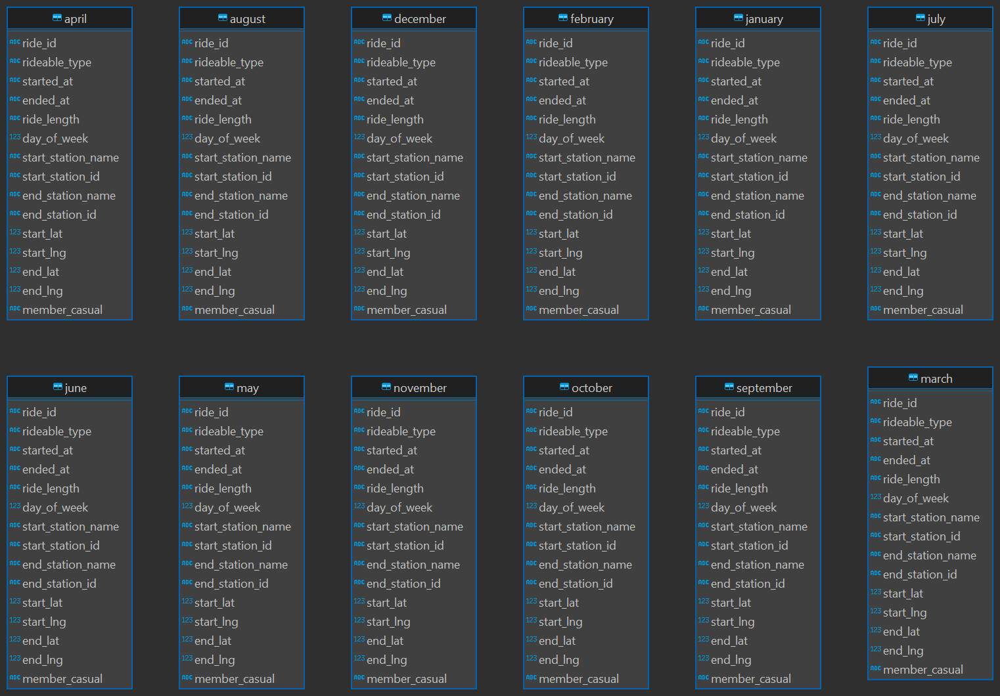

Cyclistic Bike Share Analysis

1. Introduction
- The Cyclistic Bike Share Analysis is conducted for a bike-sharing company in Chicago that aims to convert their casual bike riders into members.
- The goal of this analysis is to understand the differences in usage patterns between casual riders and members to identify strategies for encouraging casual riders to become members.
2. Data Collection
- The data for 2023 was downloaded from the following link: Click here
- The fields of the downloaded data are as follows:
- ride_id: The rider's ID
- rideable_type: The bike type (Electric, Docked, Classic)
- started_at: Date and time the bike sharing started
- ended_at: Date and time the bike sharing ended
- start_station_name: The station where the ride started
- start_station_id: The ID of the start station
- end_station_name: The station where the ride ended
- end_station_id:The ID of the end station
- start_lat: Latitude of the start station
- start_lng: Longitude of the start station
- end_lat: Latitude of the end station
- end_lng: Longitude of the end station
- member_casual:The membership type (casual or member)
3. Data Cleaning and Preparation
- After downloading the data, several cleaning operations were performed using Excel:
- Removed Incomplete Data: Rows that did not have values for ride_id, rideable_type, start_station_name, end_station_name, end_lat, end_lng, start_lat, start_lng, and member_casual were removed.
- Fixed Format Errors: Corrected any formatting errors to ensure consistency across the dataset.
4. Data Enhancement
- To facilitate the analysis, two new columns were added in Excel:
- Ride Length: Calculated by subtracting the start_date from the end_date and converting the result into seconds.
- Day of Week: Determined using the WEEKDAY function to identify the day of the week each ride took place.
5. Database Integration
- Next, the cleaned and enhanced data was added to a database named cyclist_bikeshare to perform further calculations using SQL queries. Below is an image of the database structure, which is included for reference.

6. Analysis and Visualizations
-
• Monthly Ride Pattern Analysis
- Objective:
- To analyze the ride patterns by day of the week for each month in 2023.
- Tools Used:
- SQL: Utilized to calculate the number of rides for casual and member riders.[View the SQL query on GitHub]
- Excel: Employed pivot tables to determine the average ride length in seconds for casual and member riders.
- Visualization:
- Created grouped bar charts to compare the number of rides and average ride length between casual and member riders on a monthly, day-wise basis (e.g., comparing Sundays across each month).
- Key Findings:
- Seasonal Trends: April, May, June, July, August, September, and October showed higher participation of casual riders, with peaks in June and July.
- Day of the Week Patterns: Weekends attract more casual riders, while weekdays see higher numbers of member riders.
- Ride Length Variations: The average ride length for casual riders exhibited significant fluctuations, whereas member riders maintained a more consistent average.
- Low Participation in Winter: February recorded the lowest participation of casual riders.
- Objective:
• Bike Type Usage Comparison
- Objective:
- To compare the usage patterns of different bike types (classic, docked, electric) between casual and member riders.
- Tools Used:
- SQL: SQL queries were utilized to extract the number of rides for casual and member riders by bike type.[View the SQL query on GitHub]
- Excel:Pivot tables were employed to calculate the average ride length in seconds for casual and member riders by bike type for each month.
- Visualization:
- The resulting data was visualized to display two groups: casual and member riders. Each group was further segmented by bike type (classic, docked, electric), illustrating the number of rides and average ride length for each bike type across all months and days of the week. For example, the visualization compares bike type usage for casual and member riders on Mondays in January, and extends this comparison throughout the year.
- Key Findings:
- Docked Bike Usage: Docked bikes were the least popular among riders. Casual riders showed some interest in docked bikes until August, after which their usage declined significantly. Member riders displayed almost no interest in docked bikes throughout the year.
- Electric Bike Preference: Casual riders preferred electric bikes throughout the year, except in August, September, and October when classic bikes were more favored.
- Classic vs. Electric Bikes: Member riders maintained a balanced preference for both classic and electric bikes throughout the year.
- Average Ride Length: The average ride length for casual riders fluctuated across different bike types, whereas it remained relatively constant for member riders.
- Daily Usage Patterns: Member riders exhibited consistent usage patterns, often choosing one bike type for weekdays and another for weekends. For instance, if they used classic bikes on weekdays, they switched to electric bikes on weekends, and vice versa.
- Casual Rider Preferences: Casual riders predominantly chose electric bikes on both weekdays and weekends, except during August, September, and October when they preferred classic bikes on weekdays.
- Objective:
• Station Visit Distribution
- Objective:
- Identify the top 50 start and end stations by the number of visits for both casual and member riders.
- Tools Used:
- SQL: SQL queries were employed to determine the top 50 start and end stations based on visit count, including their latitude and longitude[View the SQL query on GitHub]
- Visualization:
- A map of Chicago highlights the top 50 start and end stations. Each station is depicted with a pie chart indicating the proportion of visits by casual and member riders for each month.
- Key Findings:
- Central Hub Concentration: Casual riders predominantly use stations located in central areas, particularly near tourist attractions and popular city spots.
- Broad Distribution for Members: Member riders display a wider spread across the city, suggesting routine commuting routes.
- Common Popular Stations: There is a significant overlap in stations with high visit counts for both casual and member riders, indicating that key locations attract both user groups.
- Start and End Point Overlap: Many of the top stations for both starting and ending trips are the same, implying a preference for returning bikes to the same locations they were picked up from.
- Objective:
7. Conclusion
- The Cyclistic Bike Share Analysis revealed distinct usage patterns between casual riders and members, providing valuable insights for strategies to convert casual riders into members.
- Impact and Implications:
- The findings suggest targeted strategies to convert casual riders to members. Promotions during peak casual riding months, enhancing weekend ride experiences, and offering incentives for using different bike types could be effective.
- Additionally, improving facilities and services at central hub stations may attract more casual riders.
- By observing the pie charts on the map highlighting areas with higher casual rider visits, targeted offers on electric bike sharing in these regions could encourage more casual riders to become members.
- Additionally, considering the small but distinct group of casual riders using docked bikes, tailored promotions or membership incentives for this group could help convert these casual riders into members, thereby increasing the overall customer base for docked bikes.
- Challenges and Limitations:
- Challenges included handling incomplete data and correcting formatting errors. Limitations of the analysis include the reliance on available data and the potential impact of external factors (e.g., weather, events) not accounted for in the dataset.
- Future Work:
- Future analysis could explore the impact of weather and special events on riding patterns. Additionally, investigating user feedback and preferences through surveys could provide deeper insights into rider motivations and barriers to membership conversion.
- Personal Reflection:
- This project enhanced my data analysis skills, particularly in data cleaning, SQL querying, and visualization with Tableau. It also provided a deeper understanding of bike-sharing systems and the factors influencing rider behavior, reinforcing my passion for data-driven decision-making.
- Explore the full project on GitHub:
Github